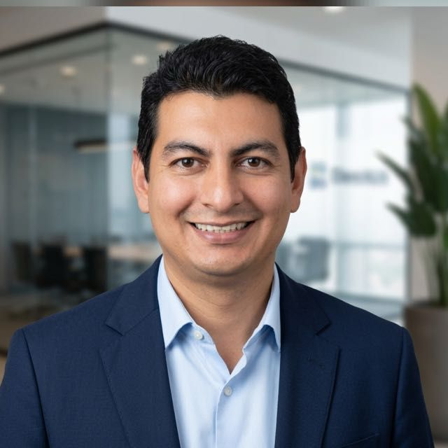
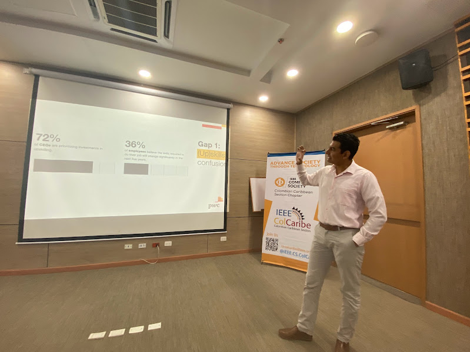
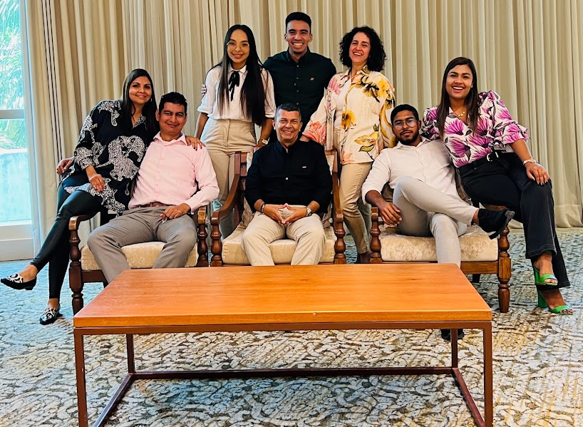
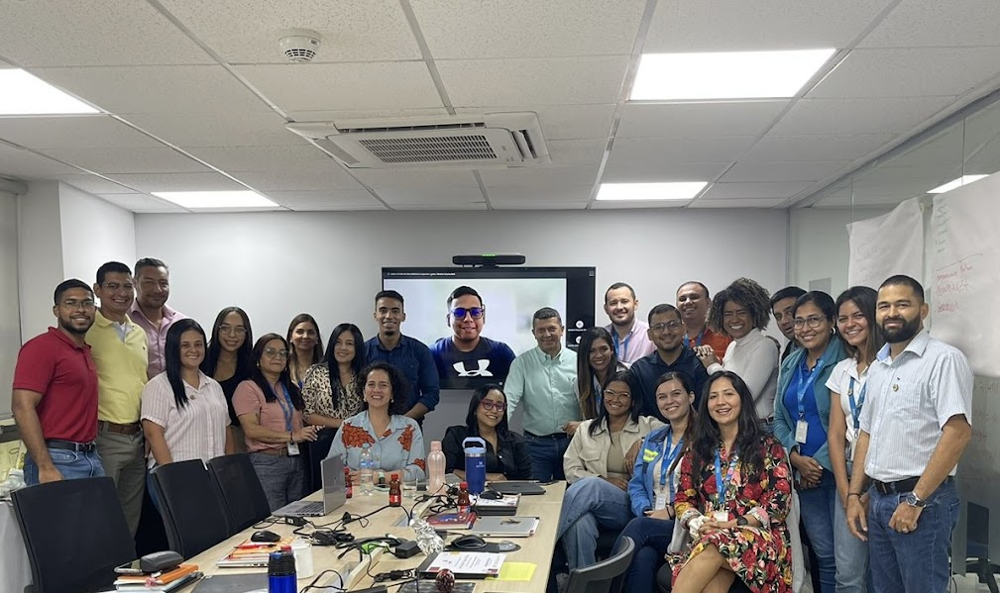
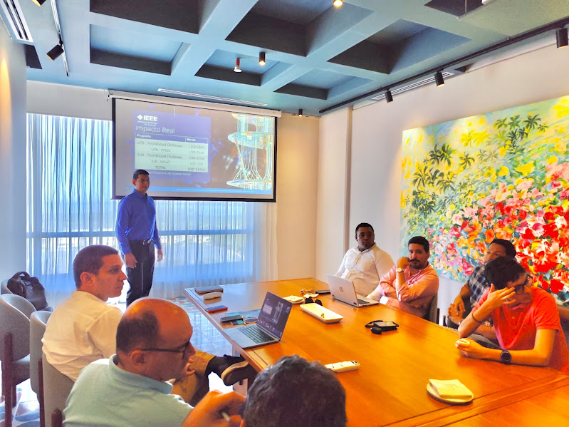
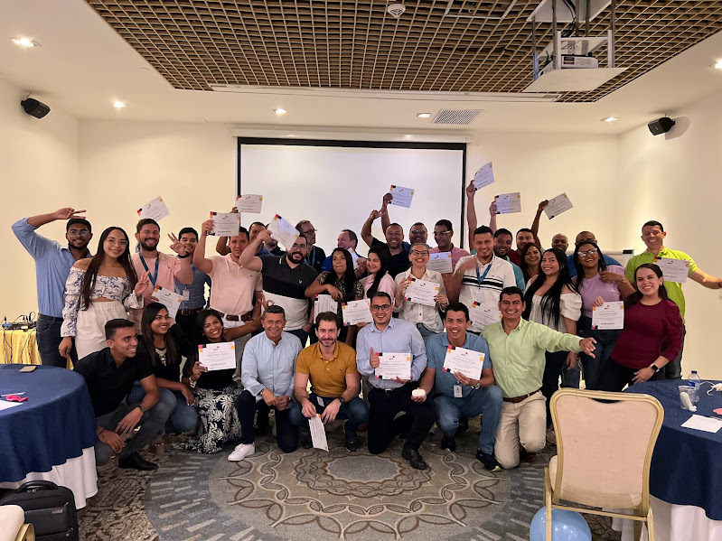
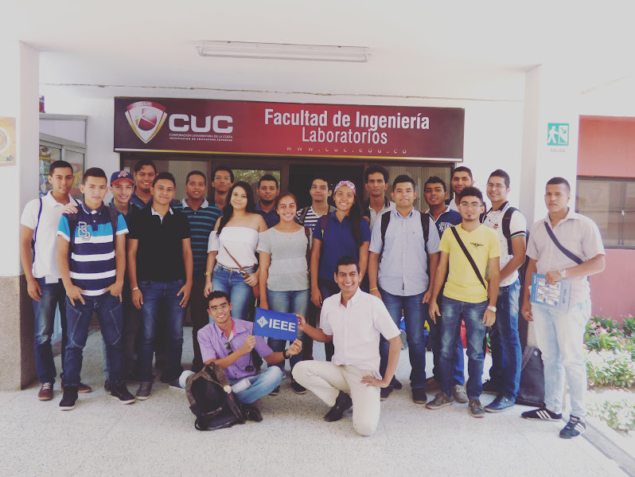

PMO · Control · Seguimiento y Analítica de Portafolios
Especialista PMO con más de 8 años de experiencia en infraestructura y servicios públicos, y más de 2 años operando y fortaleciendo Oficinas de Proyectos. Gestión de portafolios superiores a USD 200M+, monitoreo de KPIs, reportes ejecutivos y adopción de herramientas tecnológicas para el gobierno del portafolio.







Control del portafolio, analítica aplicada y gobierno de proyectos — donde los datos se convierten en decisiones.
Mi trayectoria combina la operación directa de Oficinas de Proyectos con la consultoría estratégica en entornos de primer nivel como PricewaterhouseCoopers, acumulando más de 8 años gestionando proyectos de infraestructura y servicios públicos.
He operado y fortalecido PMOs con portafolios superiores a USD 200 millones, implementando esquemas de seguimiento, semaforización de avances y mecanismos de alerta temprana que permiten a la alta dirección tomar decisiones con información confiable y oportuna.
Mi diferenciador está en unir la analítica de datos con la gestión de proyectos: diseño tableros en Power BI, automatizo reportes con Python y estructuro metodologías de control que generan visibilidad real sobre el estado del portafolio — no solo reportes periódicos.
En PwC estructuré la primera PMO de AFINIA, articulando equipos técnicos, legales y financieros. Esa experiencia me dio acceso a la lógica con que las organizaciones de alto desempeño priorizan, controlan y gobiernan sus proyectos estratégicos.
Abierto a oportunidades en PMO, gestión y control de portafolios, analítica de proyectos y consultoría en entornos tecnológicos y de servicios públicos.